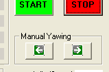

As mentioned in Yawing of the nacelle one of the important control issues is related to the keeping the number of turns of the cables within adequate limits. In this session we will explore the limits used in the this control.
Forcing the limit switch of the cables.
The arm of this switch is somehow attached to the set of power cables through a fixed length rope, so when the twist of those cables around themselves reach a given value, the switch is activated. In the simulator this switch is modeled in the Nacelle emulator and the signal equivalent to the physical switch is named "Nacelle.Yawing.MaxCablesTurnsReached". This output signal is connected to the simulated Wind Turbine Controller (Control Terminal Synoptic) through the input signal named "Controller.Control.MaxCableTwistReachedIn".
To simulate forcing the activation of this switch you should use the Yawing buttons in the Control Terminal. See next figure. They become active in the "Manual mode" of operation: you should press the STOP button in case the Wind Turbine is in production.

Bring up the SynopticWindNacelle and using these buttons you should be able to turn the Nacelle till the "Turns Cables" widget indicates "3.5". This is the value of the "Parameter.NacelleYawing.MaxCableTwist". There will be an annotation in the "Opened incidences" (see next figure: in this case for a maximum value clockwise).

As power for the yawing motors is removed in the Nacelle, pressing the yawing button in the direction of of the limit will not increase the Nacelle orientation. If you press the other yawing motor, then immediately the limit switch will be released and the "recovered" date will be annotated in the "Opened incidences" tab. See next figure.

To liberate this situation you must acknowledge the incidence. Then you can press START to initiate a Cutin process (if wind speed is enough).
Untwisting before Cutin
Using a similar approach (i.e, in Manual mode and using the yawing buttons) rotate the Nacelle so the number of turns of the cables is higher than 1.5. This value corresponds to "Parameter.ControllerYawing.MaxCableTwistBeforeCutin".
If the conditions for cutin are met and you press the START button you will notice that the Nacelle starts a process of untwisting the cables, that finishs when this number is less than 1 turn (in absolute value) and the Nacelle is oriented upwing. Then the actual cutin process starts.
Untwisting before approaching hardware limit
You should put the Wind Turbine in production and then change the wind direction always in the same direction waiting for the Controller to control the yawing motor so the Nacelle tacks the new direction.
Keep doing this till the "Turns Cables" is higher than 2.5. This is the value of "Parameter.ControllerYawing.MaxCableTwist", a value that must be smaller than "Parameter.NacelleYawing.MaxCableTwist" (the value that activates the limit switch in the Nacelle). When the 2.5 limit is reached you will notice that the Controller cutout (set the Wind Turbine out of production) and initiates a process of untwisting. After the turns are smaller than 1 (absolute value) then it initiates a cutin process.
NOTE: the process of changing the wind direction and cause tracking of the Nacelle should be done with care. One way is to use the "PageUp" and "PageDown" keys while the focus on the "Wind direction" widget in the SynoticWindNacelle. Pressing any of these keys increment or decrement the wind direction by 10 degrees.